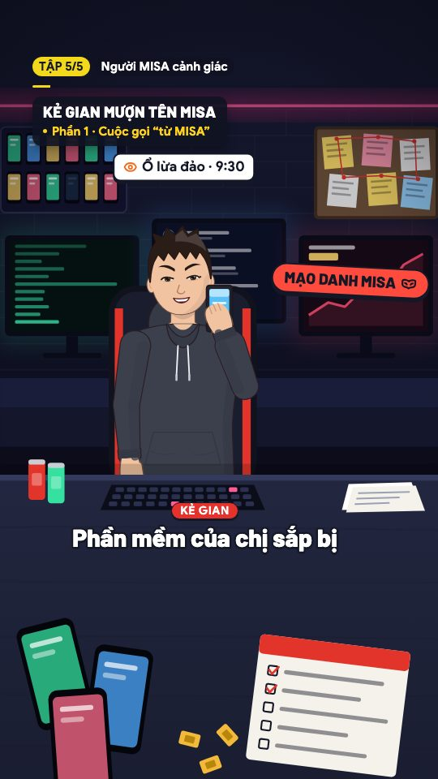
1story4.1s
Alo, em gọi từ MISA. Phần mềm của chị sắp bị khoá!
♪ whoosh-soft · pop · whoosh

Alo, em gọi từ MISA. Phần mềm của chị sắp bị khoá!
♪ whoosh-soft · pop · whoosh
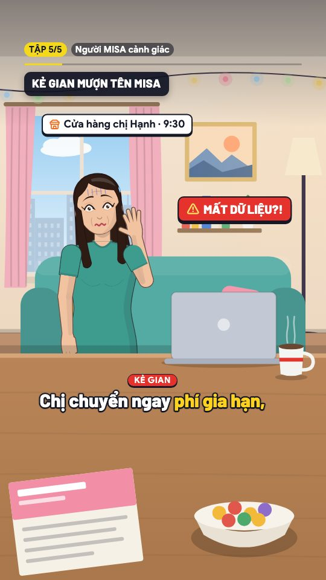
Chị chuyển ngay phí gia hạn, không là mất hết dữ liệu.
Chết, sổ sách cả năm của tôi nằm trong đó!
♪ whoosh · whoosh-soft · error
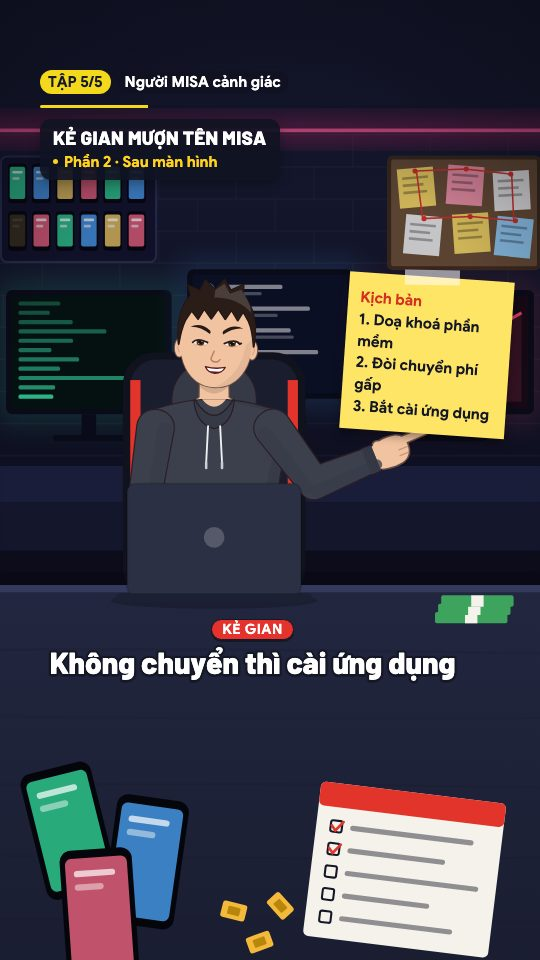
Kẻ gian mượn tên MISA, đánh vào nỗi sợ mất dữ liệu.
Không chuyển thì cài ứng dụng này, em hỗ trợ từ xa.
♪ whoosh · pop-soft
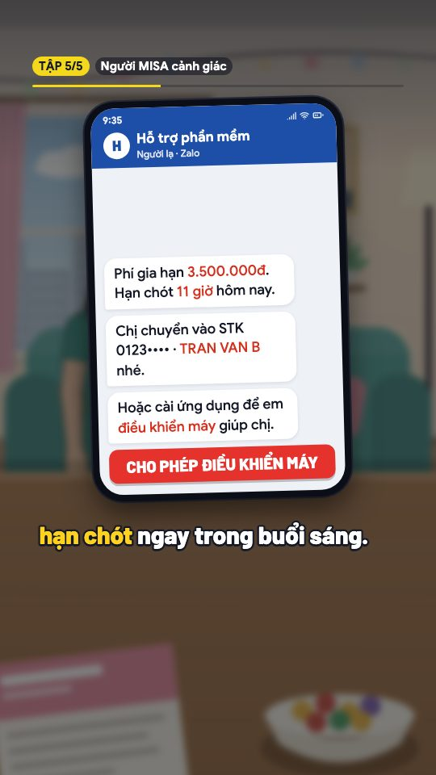
Tin nhắn tới tấp: phí gia hạn, hạn chót ngay trong buổi sáng.
Người nhận là tài khoản cá nhân, kèm lời mời cài ứng dụng điều khiển máy.
♪ whoosh · swoosh-up · bubble · click
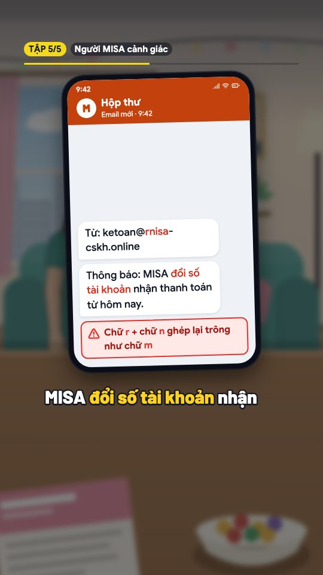
Rồi thêm một email: MISA đổi số tài khoản nhận tiền.
Soi kỹ địa chỉ: chữ r với chữ n ghép lại, trông như chữ m.
♪ swoosh-up · bubble · error · whoosh
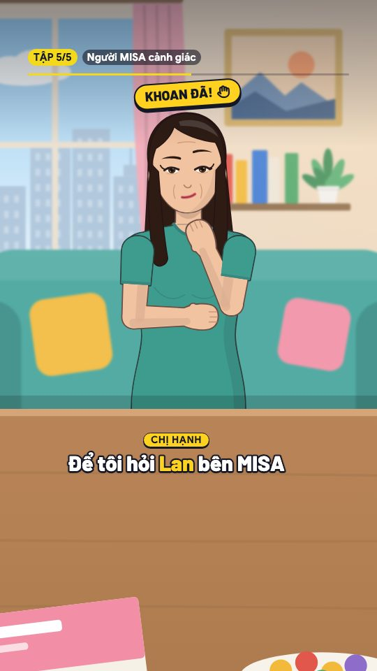
Sao lại gấp thế? Để tôi hỏi Lan bên MISA đã.
♪ whoosh · pop
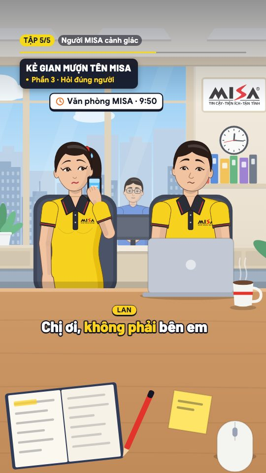
Lan ơi, bên em vừa gọi bảo chị chuyển phí, đúng không?
Chị ơi, không phải bên em đâu! Chị đừng chuyển nhé.
♪ whoosh-soft · pop · whoosh
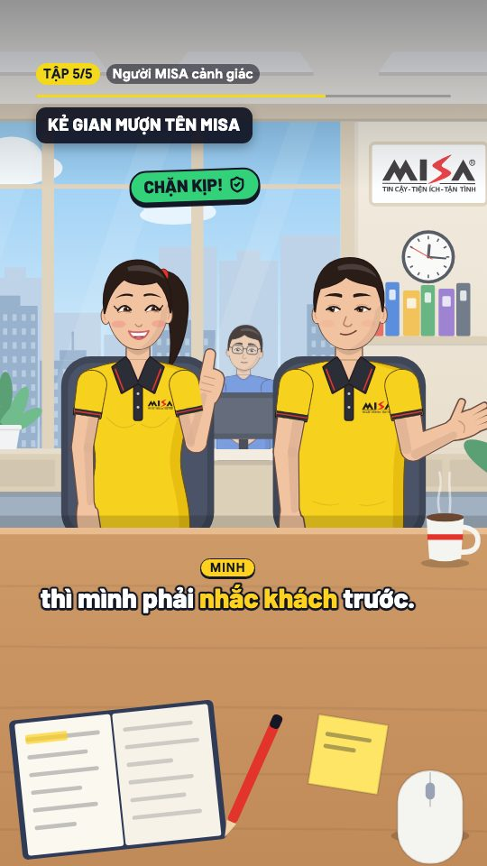
Có gì lạ, chị cứ gọi em hoặc số in trên hợp đồng nhé.
Kẻ gian mượn tên mình, thì mình phải nhắc khách trước.
♪ whoosh · pop
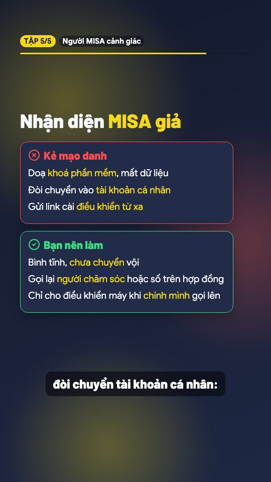
Doạ khoá phần mềm, đòi chuyển tài khoản cá nhân: đó là MISA giả.
Hãy gọi lại người chăm sóc hoặc số trên hợp đồng để hỏi.
♪ tick · whoosh
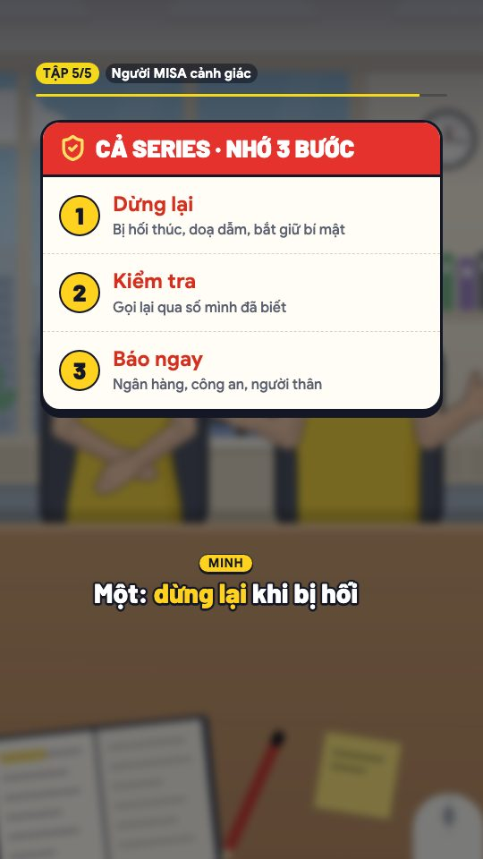
Cả series chỉ cần nhớ. Một: dừng lại khi bị hối thúc.
Hai: kiểm tra lại qua số mình đã biết.
Ba: báo ngay ngân hàng, công an và người thân.
♪ whoosh · swoosh-up · pop
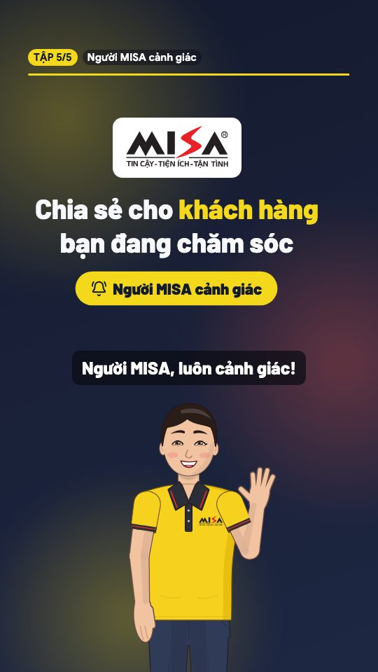
Chia sẻ cho khách hàng và người thân nhé. Người MISA, luôn cảnh giác!
♪ whoosh · pop-soft · chime
👤 minh · chao